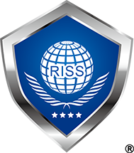

サービス
CYBER-SECUREは、セキュリティの専門家による最高水準のサイバーセキュリティサービスを提供しています。あなたのビジネスをハッカーや悪意ある攻撃から守るために、専門的なサービスをご提供します。
専門的なサービス
- セキュリティコンサルティング
- サイバーセキュリティに関するコンサルティング
- 情報セキュリティマネジメント指導業務
（「SECURITY ACTION」対応・セキュリティポリシー作成等）
- セキュリティ意識向上
- セキュリティ意識向上トレーニング
- セキュリティ運用
- SOC運用支援
- SIEM構築・運用支援（AWS）
- CSIRT運用支援
- セキュリティ監査
- セキュリティ監査支援
- 教育
- サイバーセキュリティ教育
- ホワイトハットハッカー教育
- その他
- 記憶媒体（HDD/SSD）のデータ消去
- IT全般に関するコンサルティング
- システム開発
あなたのデジタルアセットとプライバシーを守るために、専門知識と経験を活用しています。
代表について
情報処理安全確保支援士としての経験豊富な専門家です。情報セキュリティの分野での知識と実績に裏打ちされた専門的なアドバイスと指導を提供しています。
IPAの公式ウェブサイトから詳細情報をご確認いただけます。
詳細情報: 情報処理安全確保支援士 検索サービスの代表のページはこちら
お問い合わせ
ご質問やご相談がありましたら、お気軽にお問い合わせください。専門家がお手伝いいたします。
Email: kurose.kentaro.kk@jp-rissa.or.jp
電話番号: 080-6749-9696
情報セキュリティ基本方針
情報セキュリティに関する詳細な方針については、こちらをご覧ください。
|

第000204号 |

|